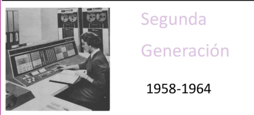
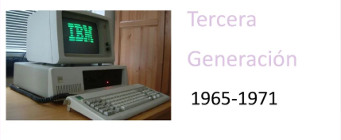
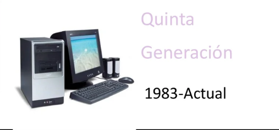

Generaciones de Computadoras (Primera a Sexta)
La historia de las computadoras se divide en generaciones, cada una marcada por avances tecnológicos clave. Desde los tubos de vacío hasta la inteligencia artificial, cada etapa ha permitido que las computadoras sean más rápidas, pequeñas y accesibles.
| Generación | Descripción | Imagen |
|---|---|---|
| Primera | Tubos de vacío |  |
| Segunda | Transistores |  |
| Tercera | Circuitos integrados |  |
| Cuarta | Microprocesadores | |
| Quinta | Inteligencia artificial básica |  |
| Sexta | Computación avanzada y conectividad global |